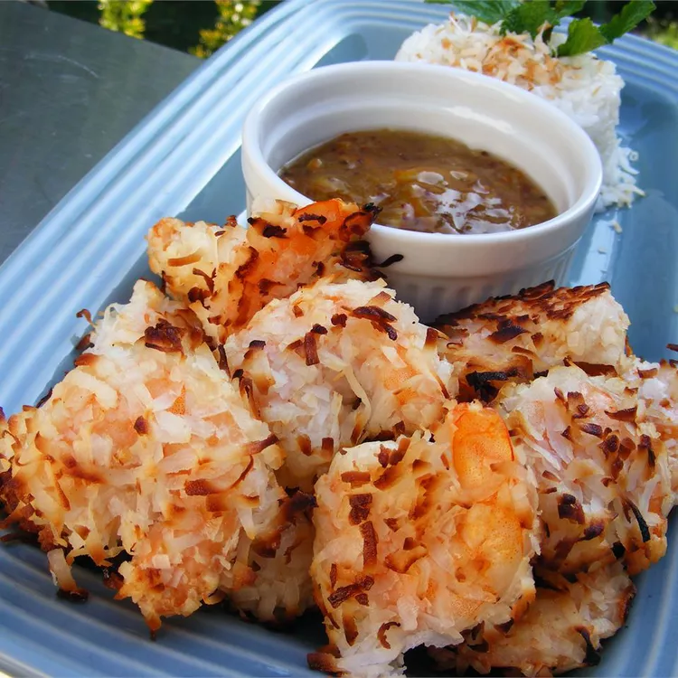

Coconut Shrimp

Description
Crispy baked coconut shrimp to be served as dinner or an appetizer.
Served with orange marmalade for dipping.
Ingredients
- 1 lb large shrimp, peeled and deveined
- 1/3 cup cornstarch
- 1 tsp salt
- 3/4 tsp cayenne pepper
- 2 cups flaked sweetened coconut
- 3 egg whites
Steps
- Preheat the oven to 400 degrees F (200 degrees C). Lightly coat a baking sheet with cooking spray.
- Rinse and dry shrimp with paper towels. Mix cornstarch, salt, and cayenne pepper in a shallow bowl. Pour coconut flakes into a separate shallow bowl. Beat egg whites in a third shallow bowl until foamy.
- Rinse and dry shrimp with paper towels. Mix cornstarch, salt, and cayenne pepper in a shallow bowl. Pour coconut flakes into a separate shallow bowl. Beat egg whites in a third shallow bowl until foamy.
- Bake the shrimp until they are bright pink on the outside and the meat is no longer transparent in the center and the coconut is browned, 15 to 20 minutes, flipping the shrimp halfway through.